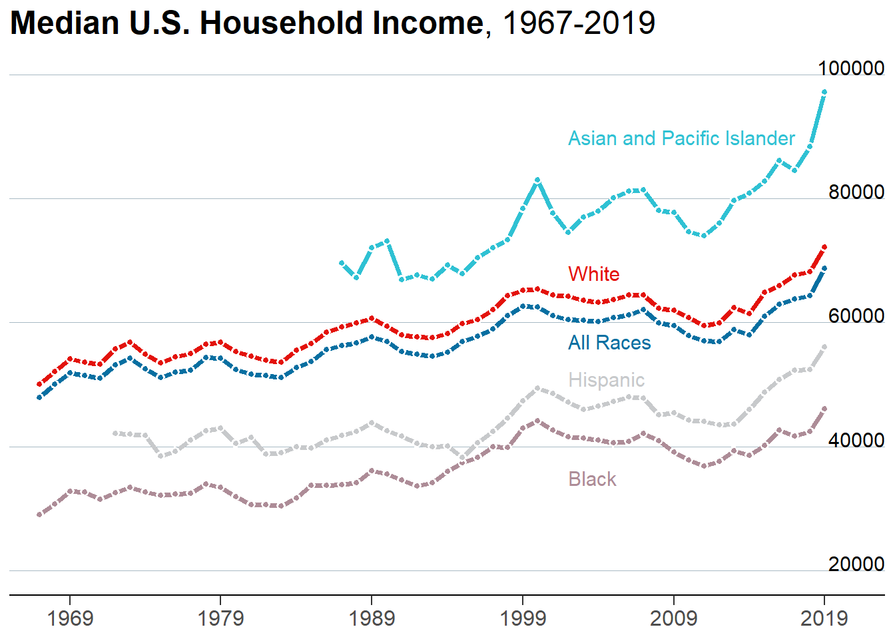
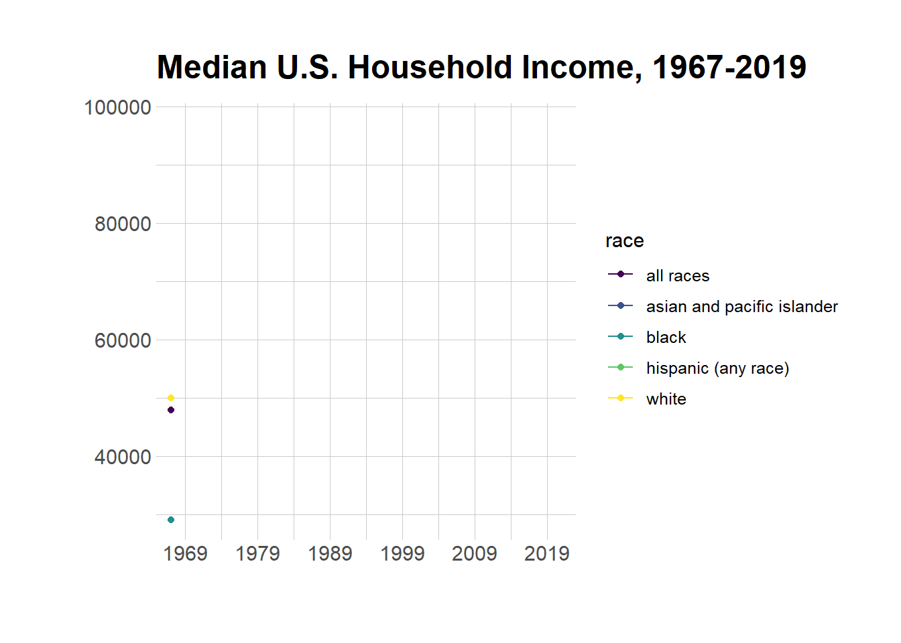
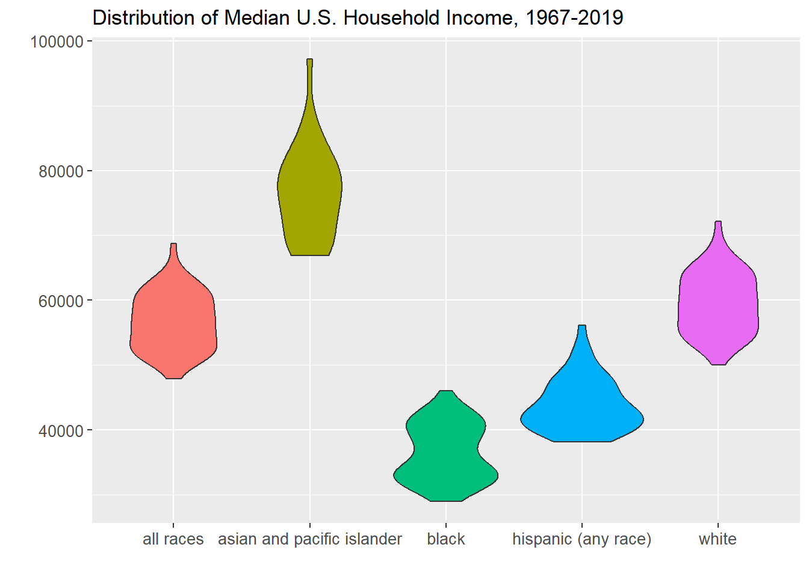

read in a data set, and describe the data set using both words and any supporting information (e.g., tables, etc)
tidy data (as needed, including sanity checks)
mutate variables as needed (including sanity checks)
Recreate at least two graphs from previous exercises, but introduce at least one additional dimension that you omitted before using ggplot functionality (color, shape, line, facet, etc) The goal is not to create unneeded chart ink (Tufte), but to concisely capture variation in additional dimensions that were collapsed in your earlier 2 or 3 dimensional graphs.
Explain why you choose the specific graph type
If you haven’t tried in previous weeks, work this week to make your graphs “publication” ready with titles, captions, and pretty axis labels and other viewer-friendly features
R Graph Gallery is a good starting point for thinking about what information is conveyed in standard graph types, and includes example R code. And anyone not familiar with Edward Tufte should check out his fantastic books and courses on data visualizaton.
(be sure to only include the category tags for the data you use!)
Read in data
Read in one (or more) of the following datasets, using the correct R package and command.
eggs ⭐
abc_poll ⭐⭐
australian_marriage ⭐⭐
hotel_bookings ⭐⭐⭐
air_bnb ⭐⭐⭐
us_hh ⭐⭐⭐⭐
faostat ⭐⭐⭐⭐⭐
The dataset contains mean income and median income data from 1967 to 2019 across different race categories: all races, white, white alone, white alone not hispanic, white not hispanic, black, black alone or in combination, black alone, asian alone or in combination, asian alone, asian alone or in combination, asian and pacific islander, hispanic (any race). The dataset also breaks each race category down into income range percents: under 15000, 15000 to 24999, 25000 to 34999, 35000 to 49999, 50000 to 74999, 75000 to 99999, 100000 to 149999, 150000 to 199999, over 200000. A case is a race category in a year.
household <- readxl::read_excel("_data/USA Households by Total Money Income, Race, and Hispanic Origin of Householder 1967 to 2019.xlsx", sheet="tableA2", range="A5:P357")household2 <- household %>%mutate(index =1:n(), #add index and race columnsrace =case_when(between(index, 2, 56) ~"all races",between(index, 58, 77) ~"white",between(index, 79, 113) ~"white",between(index, 115, 134) ~"white not hispanic",between(index, 136, 165) ~"white not hispanic",between(index, 167, 186) ~"black", between(index, 188, 207) ~"black alone",between(index, 209, 243) ~"black",between(index, 245, 264) ~"asian and pacific islander",between(index, 266, 285) ~"asian alone",between(index, 287, 301) ~"asian and pacific islander",between(index, 303, 352) ~"hispanic (any race)" ),year =str_sub(`...1`, 1, 4), #remove superscripts from year, there are duplicatesnumber_in_thousands =`...2`) %>%select(-c(`...1`,`...2`, index)) %>%filter(!is.na(Total)) %>%select(race, year, everything()) %>%#reorder columns %>%distinct(race, year, .keep_all=TRUE) #keep the top duplicate since it is the most updated data
Briefly describe the data
Tidy Data (as needed)
Is your data already tidy, or is there work to be done? Be sure to anticipate your end result to provide a sanity check, and document your work here.
The data is not tidy. Each income range has its own percent column. There are ten such percent columns, and they can be turned into two columns: one column denoting the range, and another column for the percent amount. There are seven columns used to identify a case, so the number of expected rows after this pivot is nrow(household2) * (ncol(household2)-7) = 3240 rows. The data has 17 variables before the pivot and 10 variables to be pivoted into 2 variables, so the number of expected columns is 9 columns. The summary output of household25, which is the resulting dataset after this pivot, has 3240 rows and 9 columns as expected.
Each income estimate also has separate columns for mean, the corresponding margin of error, median, and the corresponding margin of error. These four columns can be turned into three columns: one denoting whether the estimate is a mean or median, another for the estimate value, and one for the margin of error. There are seven variables used to identify a case, so the number of expected rows after this pivot is nrow(household25) * (ncol(household25)-7) = 6480 rows. The data has 9 variables before the pivot and 4 variables to be pivoted into 3 variables, so the expected number of columns is 8 columns. The summary output of household 35, which is the resulting dataset after this pivot, has 6480 rows and 8 columns as expected.
head(household2)
# A tibble: 6 × 17
race year Total Under …¹ $15,0…² $25,0…³ $35,0…⁴ $50,0…⁵ $75,0…⁶ $100,…⁷
<chr> <chr> <dbl> <dbl> <dbl> <dbl> <dbl> <dbl> <dbl> <dbl>
1 all races 2019 100 9.1 8 8.3 11.7 16.5 12.3 15.5
2 all races 2018 100 10.1 8.8 8.7 12 17 12.5 15
3 all races 2017 100 10 9.1 9.2 12 16.4 12.4 14.7
4 all races 2016 100 10.4 9 9.2 12.3 16.7 12.2 15
5 all races 2015 100 10.6 10 9.6 12.1 16.1 12.4 14.9
6 all races 2014 100 11.4 10.5 9.6 12.6 16.4 12.1 14
# … with 7 more variables: `$150,000\r\nto\r\n$199,999` <dbl>,
# `$200,000 and over` <dbl>, Estimate...13 <dbl>,
# `Margin of error1 (±)...14` <dbl>, Estimate...15 <chr>,
# `Margin of error1 (±)...16` <chr>, number_in_thousands <chr>, and
# abbreviated variable names ¹`Under $15,000`, ²`$15,000\r\nto\r\n$24,999`,
# ³`$25,000\r\nto\r\n$34,999`, ⁴`$35,000\r\nto\r\n$49,999`,
# ⁵`$50,000\r\nto\r\n$74,999`, ⁶`$75,000\r\nto\r\n$99,999`, …
str(household2)
tibble [324 × 17] (S3: tbl_df/tbl/data.frame)
$ race : chr [1:324] "all races" "all races" "all races" "all races" ...
$ year : chr [1:324] "2019" "2018" "2017" "2016" ...
$ Total : num [1:324] 100 100 100 100 100 100 100 100 100 100 ...
$ Under $15,000 : num [1:324] 9.1 10.1 10 10.4 10.6 11.4 11.4 11.4 11.6 11.2 ...
$ $15,000
to
$24,999 : num [1:324] 8 8.8 9.1 9 10 10.5 10.3 10.6 10.2 10.7 ...
$ $25,000
to
$34,999 : num [1:324] 8.3 8.7 9.2 9.2 9.6 9.6 9.5 10.1 10.2 9.4 ...
$ $35,000
to
$49,999 : num [1:324] 11.7 12 12 12.3 12.1 12.6 12.5 12.5 13.1 13.3 ...
$ $50,000
to
$74,999 : num [1:324] 16.5 17 16.4 16.7 16.1 16.4 16.8 17.4 17.2 16.8 ...
$ $75,000
to
$99,999 : num [1:324] 12.3 12.5 12.4 12.2 12.4 12.1 12 12 11.9 12.4 ...
$ $100,000
to
$149,999: num [1:324] 15.5 15 14.7 15 14.9 14 13.9 13.9 13.8 14.1 ...
$ $150,000
to
$199,999: num [1:324] 8.3 7.2 7.3 7.2 7.1 6.6 6.7 6.3 6.2 6.3 ...
$ $200,000 and over : num [1:324] 10.3 8.8 8.9 8 7.2 6.8 6.9 5.9 5.8 5.9 ...
$ Estimate...13 : num [1:324] 68703 64324 63761 62898 60987 ...
$ Margin of error1 (±)...14 : num [1:324] 904 704 552 764 570 ...
$ Estimate...15 : chr [1:324] "98088" "91652" "91406" "88578" ...
$ Margin of error1 (±)...16 : chr [1:324] "1042" "914" "979" "822" ...
$ number_in_thousands : chr [1:324] "128451" "128579" "127669" "126224" ...
household35 <- household25 %>%mutate(median1estimate =`Estimate...13`, median1margin_of_error =`Margin of error1 (±)...14`, mean1estimate =as.numeric(`Estimate...15`), mean1margin_of_error =as.numeric(`Margin of error1 (±)...16`)) %>%select(-c(`Estimate...13`, `Margin of error1 (±)...14`, `Estimate...15`, `Margin of error1 (±)...16`)) %>%pivot_longer(c('median1estimate', 'median1margin_of_error', 'mean1estimate', 'mean1margin_of_error'), names_to=c("est_type", ".value"), names_sep ="\\d")head(household35)
# A tibble: 6 × 8
race year number_in_thousands income_r…¹ percent est_t…² estim…³ margi…⁴
<chr> <chr> <chr> <chr> <dbl> <chr> <dbl> <dbl>
1 all races 2019 128451 "Total" 100 median 68703 904
2 all races 2019 128451 "Total" 100 mean 98088 1042
3 all races 2019 128451 "Under $1… 9.1 median 68703 904
4 all races 2019 128451 "Under $1… 9.1 mean 98088 1042
5 all races 2019 128451 "$15,000\… 8 median 68703 904
6 all races 2019 128451 "$15,000\… 8 mean 98088 1042
# … with abbreviated variable names ¹income_range, ²est_type, ³estimate,
# ⁴margin_of_error
Are there any variables that require mutation to be usable in your analysis stream? For example, do you need to calculate new values in order to graph them? Can string values be represented numerically? Do you need to turn any variables into factors and reorder for ease of graphics and visualization?
Document your work here.
The pivot procedures did not translate the income ranges into clean strings. The income_range variable contains extraneous characters such as backslash r and backslash n which need to be removed; this can be fixed by using the mutate and case_when to clean the strings. Also the mean estimate and margin of error are of character types, because there is a cell which contains N as a value. It corresponds to Asian and Pacific Islander in 1987, and the footnote states that a new data processing system was being instituted that year. These mean and margin of error columns will need to be converted to numeric in order to plot.
household3 <- household2 %>%pivot_longer(col =`Total`:`$200,000 and over`,names_to="income_range",values_to ="percent") %>%mutate(number_in_thousands =as.numeric(case_when(number_in_thousands =="N"~"", TRUE~ number_in_thousands)), median1estimate =`Estimate...13`, median1margin_of_error =`Margin of error1 (±)...14`, mean1estimate =as.numeric(`Estimate...15`), mean1margin_of_error =as.numeric(`Margin of error1 (±)...16`), income_range =case_when(income_range =="Total"~"Total", income_range =="Under $15,000"~"Under $15,000", income_range =="$15,000\r\nto\r\n$24,999"~"$15,000 to $24,999", income_range =="$25,000\r\nto\r\n$34,999"~"$25,000 to $34,999", income_range =="$35,000\r\nto\r\n$49,999"~"$35,000 to $49,999", income_range =="$50,000\r\nto\r\n$74,999"~"$50,000 to $74,999", income_range =="$75,000\r\nto\r\n$99,999"~"$75,000 to $99,999", income_range =="$100,000\r\nto\r\n$149,999"~"$100,000 to $149,999", income_range =="$150,000\r\nto\r\n$199,999"~"$150,000 to $199,999", income_range =="$200,000 and over"~"$200,000 and over")) %>%select(-c(`Estimate...13`, `Margin of error1 (±)...14`, `Estimate...15`, `Margin of error1 (±)...16`)) %>%pivot_longer(c('median1estimate', 'median1margin_of_error', 'mean1estimate', 'mean1margin_of_error'), names_to=c("est_type", ".value"), names_sep ="\\d")# categorize estimate and margin of error into mean, median#NA's introduced in 1987 for mean because it is is "N" - footnote says because no data due to implementation of new processing systemhead(household3)
# A tibble: 6 × 8
race year number_in_thousands income_r…¹ percent est_t…² estim…³ margi…⁴
<chr> <chr> <dbl> <chr> <dbl> <chr> <dbl> <dbl>
1 all races 2019 128451 Total 100 median 68703 904
2 all races 2019 128451 Total 100 mean 98088 1042
3 all races 2019 128451 Under $15… 9.1 median 68703 904
4 all races 2019 128451 Under $15… 9.1 mean 98088 1042
5 all races 2019 128451 $15,000 t… 8 median 68703 904
6 all races 2019 128451 $15,000 t… 8 mean 98088 1042
# … with abbreviated variable names ¹income_range, ²est_type, ³estimate,
# ⁴margin_of_error
Generated by summarytools 1.0.1 (R version 4.2.2) 2023-05-15
Visualization with Multiple Dimensions
A time series plot enables analysis of how values change over time. A time series plot with multiple series enables comparison between groups over time. A violin plot visualizes the distribution of the data, and a violin plot of several groups can enable cross-group comparison of distributions.
The time series show that the ranking of U.S. median household income by race has not changed over time: asian and pacific islander rank first, white second, hispanic third, and black fourth. Also, the animated time series bring to light that although median household income of the different races nominally differ, they do follow a similar trend over time.
The violin plot show that asian and pacific islander household median income has historically been higher than the other race groups.
options(scipen =999) #remove scientific notation# Define colors.BROWN <-"#AD8C97"BROWN_DARKER <-"#7d3a46"GREEN <-"#2FC1D3"BLUE <-"#076FA1"GREY <-"#C7C9CB"GREY_DARKER <-"#5C5B5D"RED <-"#E3120B"# Plot Labels and Label Positionsline_labels<-data.frame(labels =c("All Races", "Asian and Pacific Islander", "White", "Black", "Hispanic"),x =c(as.Date(ISOdate(2002, 1, 1)), as.Date(ISOdate(2002, 1, 1)), as.Date(ISOdate(2002, 1, 1)), as.Date(ISOdate(2002, 1, 1)), as.Date(ISOdate(2002, 1, 1))),y =c(57000, 90000, 68000, 35000, 51000),color =c(BLUE, GREEN, RED, BROWN, GREY))# Plothousehold4 <- household3 %>%filter(race=="all races"| race =="white"| race =="black"| race =="hispanic (any race)"| race =="asian and pacific islander", est_type=="median", income_range=="Total") p <- household4 %>%ggplot(aes(as.Date(ISOdate(year, 1, 1)), estimate)) +geom_line(aes(color = race), size =1.4) +geom_point(aes(fill = race), size =1.5, pch =21, # Type of point that allows us to have both color (border) and fill.color ="white", stroke =1# The width of the border, i.e. stroke. ) +# Set values for the color and the fillscale_color_manual(values =c(BLUE, GREEN, BROWN, GREY, RED)) +scale_fill_manual(values =c(BLUE, GREEN, BROWN, GREY, RED)) +# Do not include any legendtheme(legend.position ="none")p <- p +scale_x_continuous(limits =c(as.Date(ISOdate(1965, 1, 1)), as.Date(ISOdate(2023, 1, 1))),expand =c(0, 0), # The horizontal axis does not extend to either sidebreaks =c(as.Date(ISOdate(1969, 1, 1)), as.Date(ISOdate(1979, 1, 1)), as.Date(ISOdate(1989, 1, 1)), as.Date(ISOdate(1999, 1, 1)), as.Date(ISOdate(2009, 1, 1)), as.Date(ISOdate(2019, 1, 1))), # Set custom break locationslabels =c("1969", "1979", "1989", "1999", "2009", "2019") # And custom labels on those breaks! ) +theme(# Set background color to whitepanel.background =element_rect(fill ="white"),# Remove all grid linespanel.grid =element_blank(),# But add grid lines for the vertical axis, customizing color and size panel.grid.major.y =element_line(color ="#A8BAC4", size =0.3),# Remove tick marks on the vertical axis by setting their length to 0axis.ticks.length.y =unit(0, "mm"), # But keep tick marks on horizontal axisaxis.ticks.length.x =unit(2, "mm"),# Remove the title for both axesaxis.title =element_blank(),# Only the bottom line of the vertical axis is painted in blackaxis.line.x.bottom =element_line(color ="black"),# Remove labels from the vertical axisaxis.text.y =element_blank(),# But customize labels for the horizontal axisaxis.text.x =element_text(family ="Econ Sans Cnd", size =12) ) +new_scale_color() +geom_shadowtext( #Add line labelsaes(x, y, label = labels, color = color),data = line_labels,hjust =0, # Align to the leftbg.colour ="white", # Shadow color (or background color)bg.r =0.4, # Radius of the background. The higher the value the bigger the shadow.family ="Econ Sans Cnd",size =4 ) +scale_color_identity() # Use the colors in the 'color' variable as they are. p <- p +geom_text( #Add y-axis labelsdata =data.frame(x =as.Date(ISOdate(2023, 1, 1)), y =seq(20000, 100000, by =20000)),aes(x, y, label = y),hjust =1, # Align to the rightvjust =0, # Align to the bottomnudge_y =32*0.01, # The pad is equal to 1% of the vertical range (32 - 0)family ="Econ Sans Cnd",size =4 )p <- p +labs( #add titletitle ="**Median U.S. Household Income**, 1967-2019", ) +theme(# theme_markdown() is provided by ggtext and means the title contains # Markdown that should be parsed as such (the '**' symbols)plot.title =element_markdown(family ="Econ Sans Cnd", size =18 ) )p

p <- household4 %>%ggplot( aes(x=as.Date(ISOdate(year, 1, 1)), y=estimate, group=race, color=race)) +geom_line() +geom_point() + viridis::scale_color_viridis(discrete =TRUE) +ggtitle("Median U.S. Household Income, 1967-2019") +theme_ipsum() +ylab("") +xlab("") +scale_x_continuous(limits =c(as.Date(ISOdate(1965, 1, 1)), as.Date(ISOdate(2023, 1, 1))),expand =c(0, 0), # The horizontal axis does not extend to either sidebreaks =c(as.Date(ISOdate(1969, 1, 1)), as.Date(ISOdate(1979, 1, 1)), as.Date(ISOdate(1989, 1, 1)), as.Date(ISOdate(1999, 1, 1)), as.Date(ISOdate(2009, 1, 1)), as.Date(ISOdate(2019, 1, 1))), # Set custom break locationslabels =c("1969", "1979", "1989", "1999", "2009", "2019") # And custom labels on those breaks! ) +transition_reveal(as.Date(ISOdate(year, 1, 1)))p

p <-ggplot(household4, aes(x=race, y=estimate, fill=race)) +geom_violin() +# Do not include any legendtheme(legend.position ="none", axis.text=element_text(size=10)) +ggtitle("Distribution of Median U.S. Household Income, 1967-2019") +ylab("") +xlab("")p

Source Code
---title: "Challenge 7"author: "Kekai Liu"description: "Visualizing Multiple Dimensions"date: "05/15/2023"format: html: toc: true code-copy: true code-tools: truecategories: - challenge_7 - usa_households---```{r}#| label: setup#| warning: false#| message: falselibrary(tidyverse)library(ggplot2)library(grid)library(ggnewscale)library(ggtext)library(shadowtext)library(patchwork)library(gganimate)library(hrbrthemes)knitr::opts_chunk$set(echo =TRUE, warning=FALSE, message=FALSE)```## Challenge OverviewToday's challenge is to:1) read in a data set, and describe the data set using both words and any supporting information (e.g., tables, etc)2) tidy data (as needed, including sanity checks)3) mutate variables as needed (including sanity checks)4) Recreate at least two graphs from previous exercises, but introduce at least one additional dimension that you omitted before using ggplot functionality (color, shape, line, facet, etc) The goal is not to create unneeded [chart ink (Tufte)](https://www.edwardtufte.com/tufte/), but to concisely capture variation in additional dimensions that were collapsed in your earlier 2 or 3 dimensional graphs. - Explain why you choose the specific graph type5) If you haven't tried in previous weeks, work this week to make your graphs "publication" ready with titles, captions, and pretty axis labels and other viewer-friendly features[R Graph Gallery](https://r-graph-gallery.com/) is a good starting point for thinking about what information is conveyed in standard graph types, and includes example R code. And anyone not familiar with Edward Tufte should check out his [fantastic books](https://www.edwardtufte.com/tufte/books_vdqi) and [courses on data visualizaton.](https://www.edwardtufte.com/tufte/courses)(be sure to only include the category tags for the data you use!)## Read in dataRead in one (or more) of the following datasets, using the correct R package and command. - eggs ⭐ - abc_poll ⭐⭐ - australian_marriage ⭐⭐ - hotel_bookings ⭐⭐⭐ - air_bnb ⭐⭐⭐ - us_hh ⭐⭐⭐⭐ - faostat ⭐⭐⭐⭐⭐The dataset contains mean income and median income data from 1967 to 2019 across different race categories: all races, white, white alone, white alone not hispanic, white not hispanic, black, black alone or in combination, black alone, asian alone or in combination, asian alone, asian alone or in combination, asian and pacific islander, hispanic (any race). The dataset also breaks each race category down into income range percents: under 15000, 15000 to 24999, 25000 to 34999, 35000 to 49999, 50000 to 74999, 75000 to 99999, 100000 to 149999, 150000 to 199999, over 200000. A case is a race category in a year.```{r}household <- readxl::read_excel("_data/USA Households by Total Money Income, Race, and Hispanic Origin of Householder 1967 to 2019.xlsx", sheet="tableA2", range="A5:P357")household2 <- household %>%mutate(index =1:n(), #add index and race columnsrace =case_when(between(index, 2, 56) ~"all races",between(index, 58, 77) ~"white",between(index, 79, 113) ~"white",between(index, 115, 134) ~"white not hispanic",between(index, 136, 165) ~"white not hispanic",between(index, 167, 186) ~"black", between(index, 188, 207) ~"black alone",between(index, 209, 243) ~"black",between(index, 245, 264) ~"asian and pacific islander",between(index, 266, 285) ~"asian alone",between(index, 287, 301) ~"asian and pacific islander",between(index, 303, 352) ~"hispanic (any race)" ),year =str_sub(`...1`, 1, 4), #remove superscripts from year, there are duplicatesnumber_in_thousands =`...2`) %>%select(-c(`...1`,`...2`, index)) %>%filter(!is.na(Total)) %>%select(race, year, everything()) %>%#reorder columns %>%distinct(race, year, .keep_all=TRUE) #keep the top duplicate since it is the most updated data```### Briefly describe the data## Tidy Data (as needed)Is your data already tidy, or is there work to be done? Be sure to anticipate your end result to provide a sanity check, and document your work here.The data is not tidy. Each income range has its own percent column. There are ten such percent columns, and they can be turned into two columns: one column denoting the range, and another column for the percent amount. There are seven columns used to identify a case, so the number of expected rows after this pivot is nrow(household2) * (ncol(household2)-7) = 3240 rows. The data has 17 variables before the pivot and 10 variables to be pivoted into 2 variables, so the number of expected columns is 9 columns. The summary output of household25, which is the resulting dataset after this pivot, has 3240 rows and 9 columns as expected.Each income estimate also has separate columns for mean, the corresponding margin of error, median, and the corresponding margin of error. These four columns can be turned into three columns: one denoting whether the estimate is a mean or median, another for the estimate value, and one for the margin of error. There are seven variables used to identify a case, so the number of expected rows after this pivot is nrow(household25) * (ncol(household25)-7) = 6480 rows. The data has 9 variables before the pivot and 4 variables to be pivoted into 3 variables, so the expected number of columns is 8 columns. The summary output of household 35, which is the resulting dataset after this pivot, has 6480 rows and 8 columns as expected.```{r}head(household2)str(household2)#existing rows/casesnrow(household2)#existing columns/casesncol(household2)#expected rows/casesnrow(household2) * (ncol(household2)-7)# expected columns after first pivot17-10+2household25 <- household2 %>%pivot_longer(col =`Total`:`$200,000 and over`,names_to="income_range",values_to ="percent")print(summarytools::dfSummary(household25, varnumbers =FALSE, plain.ascii =FALSE, style ="grid", graph.magnif =0.70, valid.col =FALSE), method ='render', table.classes ='table-condensed')#existing rows/casesnrow(household25)#existing columns/casesncol(household25)#expected rows/casesnrow(household25) * (ncol(household25)-7)# expected columns after first pivot9-4+3household35 <- household25 %>%mutate(median1estimate =`Estimate...13`, median1margin_of_error =`Margin of error1 (±)...14`, mean1estimate =as.numeric(`Estimate...15`), mean1margin_of_error =as.numeric(`Margin of error1 (±)...16`)) %>%select(-c(`Estimate...13`, `Margin of error1 (±)...14`, `Estimate...15`, `Margin of error1 (±)...16`)) %>%pivot_longer(c('median1estimate', 'median1margin_of_error', 'mean1estimate', 'mean1margin_of_error'), names_to=c("est_type", ".value"), names_sep ="\\d")head(household35)```Are there any variables that require mutation to be usable in your analysis stream? For example, do you need to calculate new values in order to graph them? Can string values be represented numerically? Do you need to turn any variables into factors and reorder for ease of graphics and visualization?Document your work here.The pivot procedures did not translate the income ranges into clean strings. The income_range variable contains extraneous characters such as backslash r and backslash n which need to be removed; this can be fixed by using the mutate and case_when to clean the strings. Also the mean estimate and margin of error are of character types, because there is a cell which contains N as a value. It corresponds to Asian and Pacific Islander in 1987, and the footnote states that a new data processing system was being instituted that year. These mean and margin of error columns will need to be converted to numeric in order to plot.```{r}household3 <- household2 %>%pivot_longer(col =`Total`:`$200,000 and over`,names_to="income_range",values_to ="percent") %>%mutate(number_in_thousands =as.numeric(case_when(number_in_thousands =="N"~"", TRUE~ number_in_thousands)), median1estimate =`Estimate...13`, median1margin_of_error =`Margin of error1 (±)...14`, mean1estimate =as.numeric(`Estimate...15`), mean1margin_of_error =as.numeric(`Margin of error1 (±)...16`), income_range =case_when(income_range =="Total"~"Total", income_range =="Under $15,000"~"Under $15,000", income_range =="$15,000\r\nto\r\n$24,999"~"$15,000 to $24,999", income_range =="$25,000\r\nto\r\n$34,999"~"$25,000 to $34,999", income_range =="$35,000\r\nto\r\n$49,999"~"$35,000 to $49,999", income_range =="$50,000\r\nto\r\n$74,999"~"$50,000 to $74,999", income_range =="$75,000\r\nto\r\n$99,999"~"$75,000 to $99,999", income_range =="$100,000\r\nto\r\n$149,999"~"$100,000 to $149,999", income_range =="$150,000\r\nto\r\n$199,999"~"$150,000 to $199,999", income_range =="$200,000 and over"~"$200,000 and over")) %>%select(-c(`Estimate...13`, `Margin of error1 (±)...14`, `Estimate...15`, `Margin of error1 (±)...16`)) %>%pivot_longer(c('median1estimate', 'median1margin_of_error', 'mean1estimate', 'mean1margin_of_error'), names_to=c("est_type", ".value"), names_sep ="\\d")# categorize estimate and margin of error into mean, median#NA's introduced in 1987 for mean because it is is "N" - footnote says because no data due to implementation of new processing systemhead(household3)print(summarytools::dfSummary(household3, varnumbers =FALSE, plain.ascii =FALSE, style ="grid", graph.magnif =0.70, valid.col =FALSE), method ='render', table.classes ='table-condensed')```## Visualization with Multiple DimensionsA time series plot enables analysis of how values change over time. A time series plot with multiple series enables comparison between groups over time. A violin plot visualizes the distribution of the data, and a violin plot of several groups can enable cross-group comparison of distributions. The time series show that the ranking of U.S. median household income by race has not changed over time: asian and pacific islander rank first, white second, hispanic third, and black fourth. Also, the animated time series bring to light that although median household income of the different races nominally differ, they do follow a similar trend over time.The violin plot show that asian and pacific islander household median income has historically been higher than the other race groups and higher than aggregate household median income of all races.```{r}options(scipen =999) #remove scientific notation# Define colors.BROWN <-"#AD8C97"BROWN_DARKER <-"#7d3a46"GREEN <-"#2FC1D3"BLUE <-"#076FA1"GREY <-"#C7C9CB"GREY_DARKER <-"#5C5B5D"RED <-"#E3120B"# Plot Labels and Label Positionsline_labels<-data.frame(labels =c("All Races", "Asian and Pacific Islander", "White", "Black", "Hispanic"),x =c(as.Date(ISOdate(2002, 1, 1)), as.Date(ISOdate(2002, 1, 1)), as.Date(ISOdate(2002, 1, 1)), as.Date(ISOdate(2002, 1, 1)), as.Date(ISOdate(2002, 1, 1))),y =c(57000, 90000, 68000, 35000, 51000),color =c(BLUE, GREEN, RED, BROWN, GREY))# Plothousehold4 <- household3 %>%filter(race=="all races"| race =="white"| race =="black"| race =="hispanic (any race)"| race =="asian and pacific islander", est_type=="median", income_range=="Total") p <- household4 %>%ggplot(aes(as.Date(ISOdate(year, 1, 1)), estimate)) +geom_line(aes(color = race), size =1.4) +geom_point(aes(fill = race), size =1.5, pch =21, # Type of point that allows us to have both color (border) and fill.color ="white", stroke =1# The width of the border, i.e. stroke. ) +# Set values for the color and the fillscale_color_manual(values =c(BLUE, GREEN, BROWN, GREY, RED)) +scale_fill_manual(values =c(BLUE, GREEN, BROWN, GREY, RED)) +# Do not include any legendtheme(legend.position ="none")p <- p +scale_x_continuous(limits =c(as.Date(ISOdate(1965, 1, 1)), as.Date(ISOdate(2023, 1, 1))),expand =c(0, 0), # The horizontal axis does not extend to either sidebreaks =c(as.Date(ISOdate(1969, 1, 1)), as.Date(ISOdate(1979, 1, 1)), as.Date(ISOdate(1989, 1, 1)), as.Date(ISOdate(1999, 1, 1)), as.Date(ISOdate(2009, 1, 1)), as.Date(ISOdate(2019, 1, 1))), # Set custom break locationslabels =c("1969", "1979", "1989", "1999", "2009", "2019") # And custom labels on those breaks! ) +theme(# Set background color to whitepanel.background =element_rect(fill ="white"),# Remove all grid linespanel.grid =element_blank(),# But add grid lines for the vertical axis, customizing color and size panel.grid.major.y =element_line(color ="#A8BAC4", size =0.3),# Remove tick marks on the vertical axis by setting their length to 0axis.ticks.length.y =unit(0, "mm"), # But keep tick marks on horizontal axisaxis.ticks.length.x =unit(2, "mm"),# Remove the title for both axesaxis.title =element_blank(),# Only the bottom line of the vertical axis is painted in blackaxis.line.x.bottom =element_line(color ="black"),# Remove labels from the vertical axisaxis.text.y =element_blank(),# But customize labels for the horizontal axisaxis.text.x =element_text(family ="Econ Sans Cnd", size =12) ) +new_scale_color() +geom_shadowtext( #Add line labelsaes(x, y, label = labels, color = color),data = line_labels,hjust =0, # Align to the leftbg.colour ="white", # Shadow color (or background color)bg.r =0.4, # Radius of the background. The higher the value the bigger the shadow.family ="Econ Sans Cnd",size =4 ) +scale_color_identity() # Use the colors in the 'color' variable as they are. p <- p +geom_text( #Add y-axis labelsdata =data.frame(x =as.Date(ISOdate(2023, 1, 1)), y =seq(20000, 100000, by =20000)),aes(x, y, label = y),hjust =1, # Align to the rightvjust =0, # Align to the bottomnudge_y =32*0.01, # The pad is equal to 1% of the vertical range (32 - 0)family ="Econ Sans Cnd",size =4 )p <- p +labs( #add titletitle ="**Median U.S. Household Income**, 1967-2019", ) +theme(# theme_markdown() is provided by ggtext and means the title contains # Markdown that should be parsed as such (the '**' symbols)plot.title =element_markdown(family ="Econ Sans Cnd", size =18 ) )pp <- household4 %>%ggplot( aes(x=as.Date(ISOdate(year, 1, 1)), y=estimate, group=race, color=race)) +geom_line() +geom_point() + viridis::scale_color_viridis(discrete =TRUE) +ggtitle("Median U.S. Household Income, 1967-2019") +theme_ipsum() +ylab("") +xlab("") +scale_x_continuous(limits =c(as.Date(ISOdate(1965, 1, 1)), as.Date(ISOdate(2023, 1, 1))),expand =c(0, 0), # The horizontal axis does not extend to either sidebreaks =c(as.Date(ISOdate(1969, 1, 1)), as.Date(ISOdate(1979, 1, 1)), as.Date(ISOdate(1989, 1, 1)), as.Date(ISOdate(1999, 1, 1)), as.Date(ISOdate(2009, 1, 1)), as.Date(ISOdate(2019, 1, 1))), # Set custom break locationslabels =c("1969", "1979", "1989", "1999", "2009", "2019") # And custom labels on those breaks! ) +transition_reveal(as.Date(ISOdate(year, 1, 1)))pp <-ggplot(household4, aes(x=race, y=estimate, fill=race)) +geom_violin() +# Do not include any legendtheme(legend.position ="none", axis.text=element_text(size=10)) +ggtitle("Distribution of Median U.S. Household Income, 1967-2019") +ylab("") +xlab("")p```